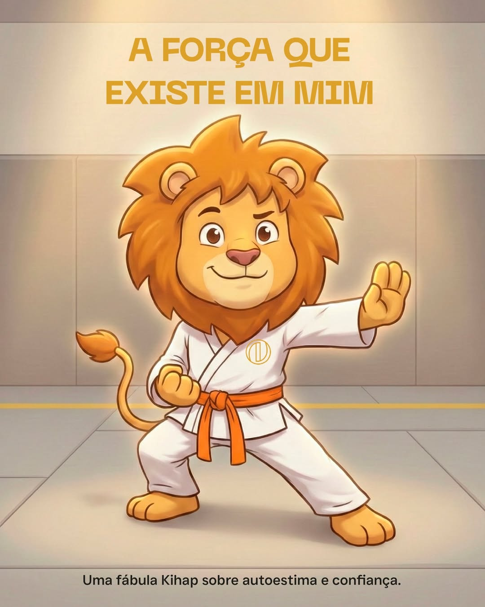

Baby Littles
O primeiro passo na jornada do seu pequeno guerreiro. Desenvolvimento motor, social e diversão em um ambiente seguro.
Desenvolvimento
com Diversão
Nosso programa Baby Littles é projetado para introduzir os conceitos mais básicos das artes marciais de uma forma lúdica e segura.
O foco está no desenvolvimento da coordenação motora, equilíbrio e habilidades sociais essenciais, tudo sob a supervisão de instrutores especializados e apaixonados pelo que fazem.
Diversão Garantida
Atividades dinâmicas e lúdicas desenhadas para capturar a atenção total dos pequenos.
Coordenação
Desenvolvimento motor direcionado para aperfeiçoar os reflexos e equilíbrio no dia a dia.
Sociabilidade
Aprendizado valioso sobre disciplina, foco e respeito através da interação saudável.
Biblioteca
Kihap
Criamos um espaço mágico cheio de historinhas exclusivas para você ler e aprender junto com seu pequeno guerreiro.
Acessar Biblioteca